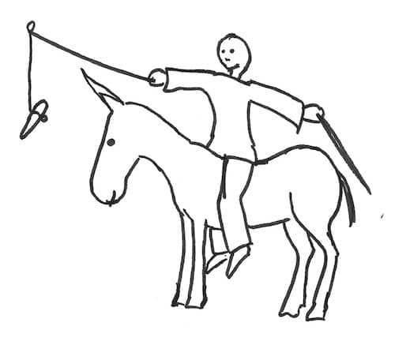

This is the third post in a series about making large organizations more agile. I encourage you to start with the beginning.
Let’s summarize the previous posts. Large scale “Agile” transformation programs usually fall short of their promise. One reason is that leaders forget to provide a safe context to learn.

What should we do ?
First, we should take the time ! Rome wasn’t built in a day. The road to an agile organization is a never ending path. We should also remember what we are after :
- Super fast adaptation to business changes through massive decentralization
- Low process overhead thanks to people’s buy-in
- Continuous innovation in both products and organization, relying on everyone’s creativity
This is far more ambitious than a mere 5% productivity increase !
Be patient for people to learn
The goal is for people to be able to take bigger decisions on the spot. No one can learn this in a few hours. All over the company, people will have to improve their problem solving skills. They might also need to learn how to do root cause analysis. They’ll need to take into account the point of views of other people in the organization. Some will need to beef up their communication skills as well. All will need to master new collaboration practices to stay up to date with what is going on.
💡 An organization cannot be agile if all decisions have to go up and down the management ladder.
That’s a lot, and it takes time. The visible part of the iceberg, the collaboration practices, can be setup in a few weeks. But it won’t yield much until the people are bold enough to take decisions by themselves.
First, I need to have a word about the workload in this section. If people are Busy to Death, They won’t have the time to learn. They won’t even have the mood to think. Again, lasting productivity goes through sustainable pace. Slack time or a 20% policy are very good investments here !
Communication skills alone take months or years to improve. A communication training campaign can help to make the company ready to be more agile. In a previous team, new joiners used to attend a Non-Violent Communication training. Being transparent a constructive is a foundation of an agile organization.
Finally, root cause analysis and problem solving skills take practice to get around. Some organizations, used to carrots and sticks, have been avoiding this for years ! Good coaches can teach this to teams. People first need to learn that it’s OK to look into problems and to experiment solutions though. That’s where a safe environment helps.
The Safe environment enhancer
If people remain afraid to fail, they won’t do enough experiments. As a result, they’ll learn slower. They’ll also keep delegating more decisions ! The organization won’t become very agile. Sure, leaders will get small productivity and predictability improvements. Unfortunately, exclusive focus on these puts innovation in danger.
People should have the means to experiment. By far the greatest experimentation killer is carrots and stick management. If people live in fear of losing their job, we have no chance of becoming more agile.
💡 Encouraging experimentation while sticking to compensation by objectives is schizophrenic.
The situation is only slightly better with management by objectives. One of the reason is that as people start to expect their bonus, they also start to fear not having it next year ! We’re back at the fear problem. There’s a more direct issue with MBO though. A good experiment should be ambitious and have a high likelihood of failure. Unfortunately, people will negotiate unambitious objectives, to secure their bonus. In the end, people do far too few bold experiments and don’t raise problems to safeguard their bonuses. Eventually, both people and the organization fail to learn.
Instead of using MBO, we need to find a different way to deal with compensation. The management 3.0 literature has plenty of ideas for that. For example :
- Salary formula. Some companies, like Buffer use a transparent formula to compute everyone’s compensation. This base salary is independent from any subjective performance evaluation. On top boosting motivation, it provides plenty of room for experimentation.
After disclosing employee salaries, Buffer was inundated with resumes
- Badge-based compensation. Holocracy describes how to take valuable skills into account in a salary formula. To get a badge on a topic, you need to be recognized by the people who already own this badge. Examples of badges can be “UX Expert” or “Senior Software Engineer”.
- Merit money. Company profits redistribution to employees should be both motivating and fair. Instead of typical yearly bonuses, merit money is a crowd-sourced money allocation scheme. Everyone regularly receives a fixed amount of monkey money. You should give some back to a colleague who helped you. You could also give some to acknowledge someone else’s great job. Every month a lottery is played to know if employees should receive their share of profits. If so, everyone gets his share in proportion with the monkey money they received. Otherwise, profits accumulate until the next lottery.
We could worry that dropping MBO will drop people’s motivation as well. It turns out it’s the exact opposite ! Check out this talk by Daniel Pinks to understand how bonuses kill motivation.
To be continued
This was part 3 of a series of posts on making large organizations more agile. We’re almost at the end. The last post will dig into how to provide the data to everyone.